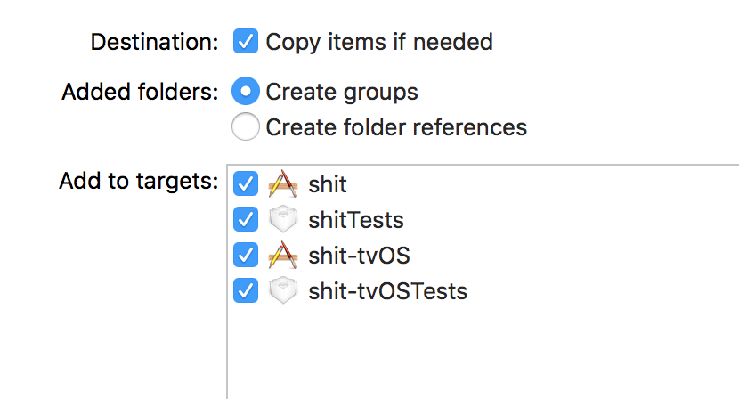
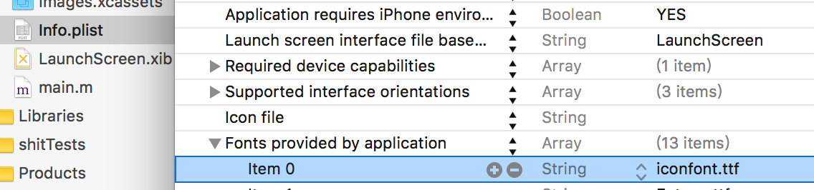

毕业设计选择了使用 react-native 做个玩具，使用自定义 icon 的时候，发现流行的 react-native-vector-icons（4223 star）没有支持大阿里的 iconfont。支持了 FontAwesome，MaterialCommunityIcons 等高大上的公共库，要知道他们加起来 icon 数还不到 iconfont 的二分之一。
后来找到前辈的解决方案，自己也去学了些 字符集 -> 字符集的编码方式 -> 系统字体 的基础知识。终于理解了为啥代码都是用英文的了…
在计算机字体长河中，除了由于字符需求的不断扩充，各国纷纷制定支持本国文字的字符标准外，还有如浏览器大战产生多个标准浏览器一样好玩的东西。比如日本泡沫经济产物 ㌍㌫㌶㍊㍍ 机种依存文字。（下面的回答爆好笑 那个时候计算机的存储器容量有限制性，所以还有了汉卡这种东西。
在一段艰难的历史进程后， ISO（国际标谁化组织）出世，决定将全世界所有的字符包含在一个集合里，计算机只要支持这一个字符集，就能显示所有的字符，也不会有乱码了。Unicode 字符集诞生。
字符集 Unicode 码标识了某个字。字符集的编码方式又是百花齐放，UTF－8，－16，GBK，GB2312….
他们都是对 Unicode 的表达方式，且各具优势。这也是一种字体文件中有十几个 cmap 的原因。
我们从阿里妈妈 iconfont 中 done 下来包中包含了 .tff .woff .eot 等字体文件。作为非标准字体，他们的 Unicode 码一般在 Unicode 码预留空间里。
.tff (TrueType) 作为一种常见的字体文件格式，是由苹果和微软在1991年提出的一种 digital font technology。它用数学函数描述字体轮廓外形，含有字形构造、颜色填充、数字描述函数、流程条件控制、栅格处理控制、附加提示控制等指令。世界范围内已经有非常广泛的应用。
一般的字体文件中主要有以下结构，.tff 也一样
cmap 唯一字符代码映射到字体图元的键值 Unicode 码
glyf 字体的描述轮廓，格式为二次 Bezier 曲线
….. 还有 loca 位置索引 hmtx 布局描述 head 字体的全局信息等等，十分复杂。
做页面的时，@font-face给引用字体并命名然后指定元素的 font-family ，使用 Unicode码 就能引用字体文件中的字体。
所以我们只要把正确的 Unicode码 放在 react-native Text 组件中就可以了。
在react-native-vector-icons 仓库中我们可以看到各个非标准字体库的 glyphmaps
在 Icon组件 render() 中的方法我们也能看到 String.fromCharCode(glyphmaps[name]) 放到 react-native Text 组件中。关于 javascript 和 Unicode 看这里和这里
那么如何生成 glyphmaps 。如果你只是对着一个10k的ttf文件，那么左手右手一个慢动作，靠着五姑娘的勤劳也可以很快完成，但是如果面对的是个有700个图标的 FontAwesome 怎么办？
前辈用 python 撸了个小脚本，引用了 fontTools 这个专业处理字体稳健库。（关于字符 py 真的强大
getcmap 的两个参数是 字体文件中 cmap 的标示信息 platformID 和 platEncID 。（吐槽下 py 界 doc 难找
platformID 和 platEncID 我们使用 fontTools 把字体转成 XML 就能看到。3, 1采用的是 UCS-2 存储编码。在 windows 中默认使用
react-native 已经默认内置了 rnpm, 所以 react-native link 就能同时在 ios 和 android 引入字体文件依赖
或者你可以在 Xcode 上引用字体文件。


android 貌似直接放入 build 文件夹就行。 参见 这里
最后 InputMono 看起来很棒啊，准备搞起来写代码了。/w\